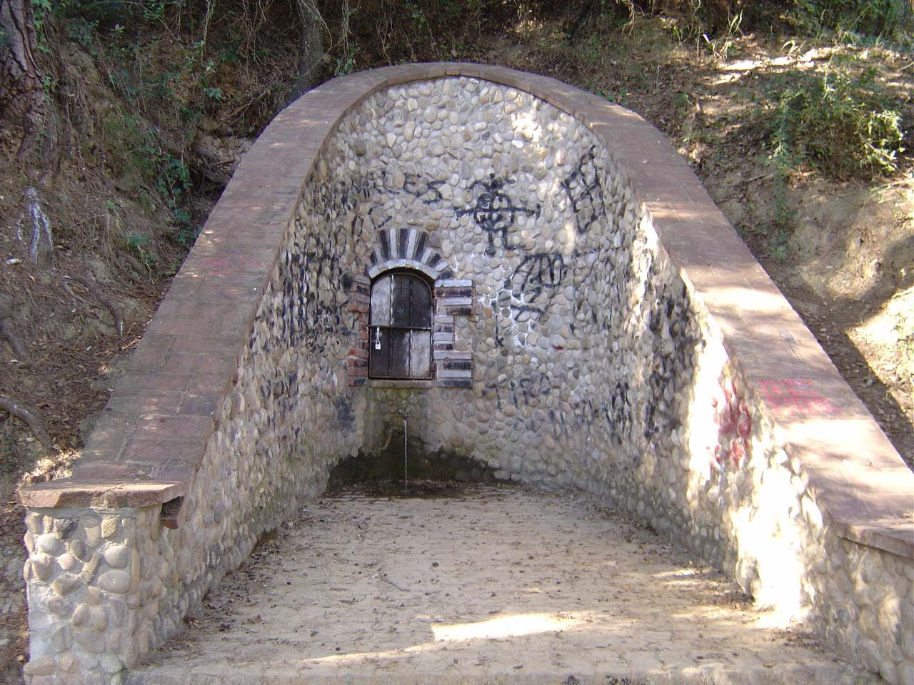
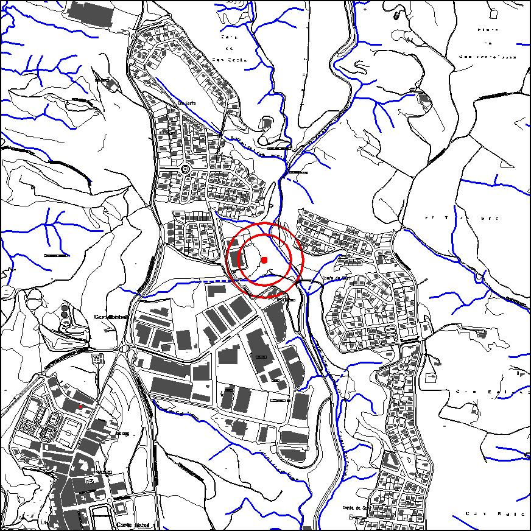

|  |  |
Nom de l’element: Font de Can Campanyà
Clau d’identificació: C.03
Nucli o indret: Nucli o indret: Camp de futbol de Can Campanyà.
UTM: X= 415.720, Y= 4.593.287.
Règim del sòl: sòl urbà.
1.1 Característiques:
Font d’aigua amb sortidor, amb una estructura empedrada amb còdols al seu voltant. Entorn format per alzinar (Quercus ilex) i pineda (Pinus spp), llentiscle (Pistacia lentiscus), arítjol (Smilax asperal) i esbarzer (Rubus ulmifolius). El raig d’aigua és continuat.
1.2. Estat de conservació:
La font presenta un estat de conservació regular degut a la presència de pintades, tot i que l’entorn presenta una bona qualitat de conservació.
1.3. Ús actual:
Lleure.
1.4. Accés:
Accés fàcil a través d’unes escales de fusta que parteixen d’un camp de futbol, el qual està situat al camí d’accés al barri de Compte de Sert des de Can Campanyà.
És una de les poques fonts d’aigua supervivents del terme municipal, i amb un raig d’aigua continuat. D’altra banda, exerceix una funció de lleure important, de caire familiar.
3.1. Usos admesos:
Espais lliures, serveis tècnics.
3.2. Condicions d’ordenació:
Segons Pla Especial a redactar.
3.3. Accés i serveis:
A través d’unes escales de fusta que parteixen d’un camp de futbol, el qual està situat al camí d’accés al barri de Compte de Sert des de Can Campanyà.
BPU (Bé Protegit Urbanísticament)